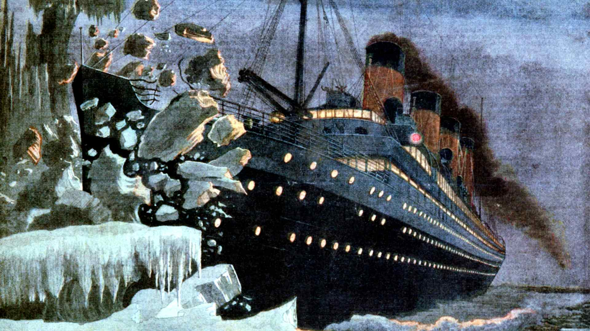
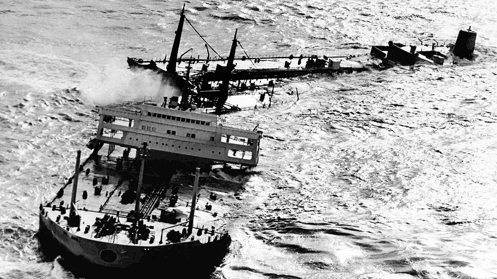
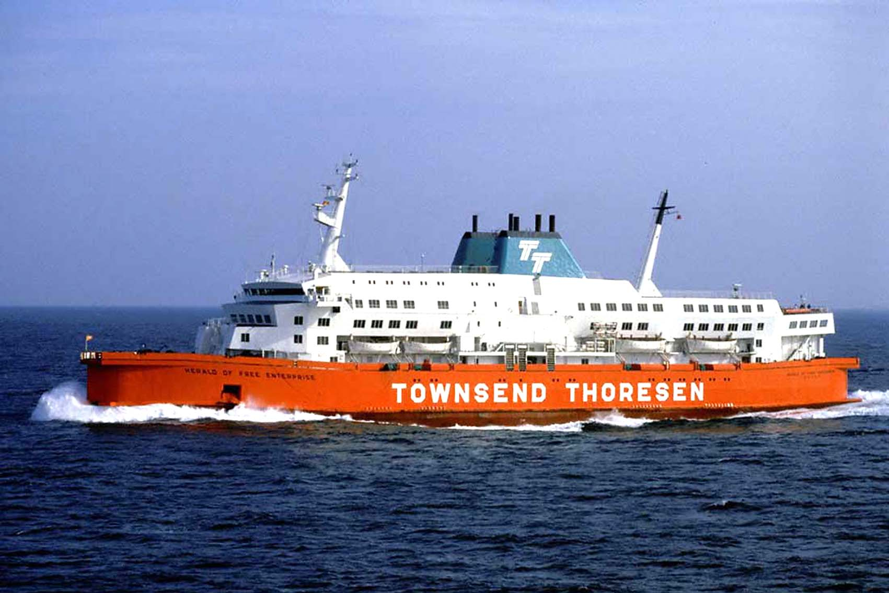
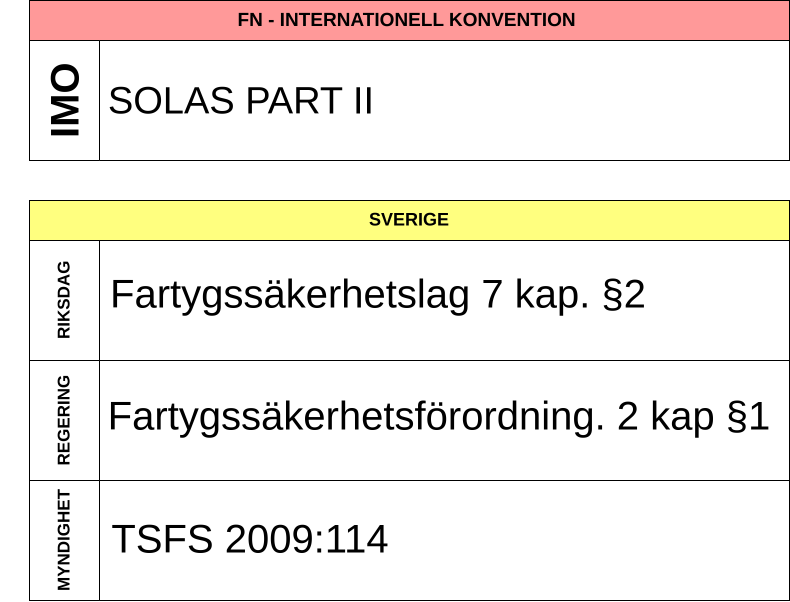
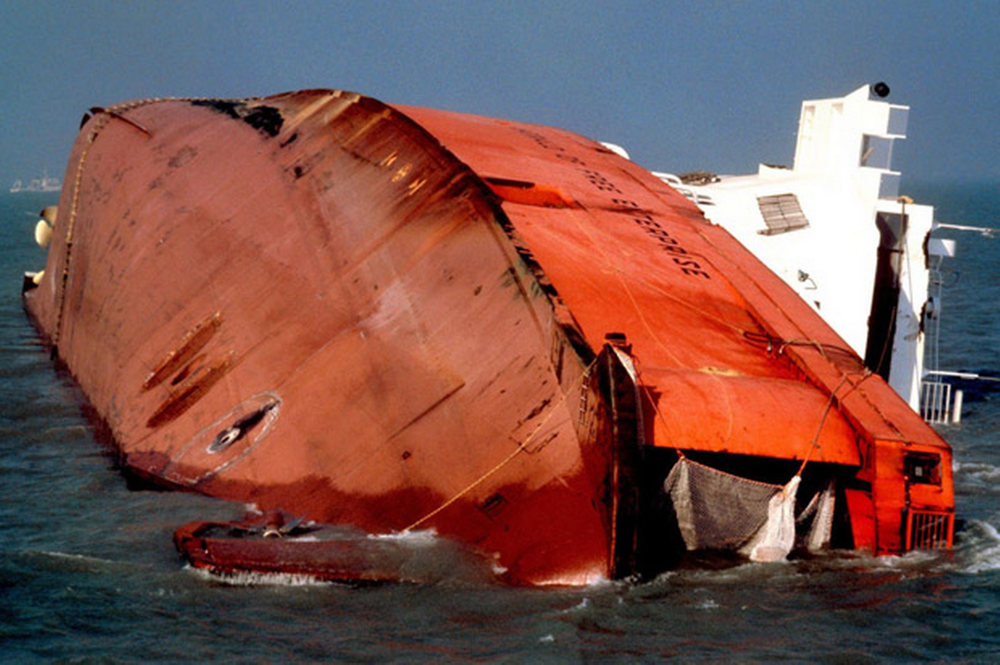

Orientering kring hur lagar, konventioner och regler hänger ihop
Vad som behövs för att lösa inlämningsuppgift 1
Repetition från högstadiet
Vem beslutar om….
Lagar
Förordningar
Föreskrifter
Lag
Beslutas av Riksdagen. Direkt straffbelagda.
Sjölagen
Arbetsmiljölagen
Sjömanslagen
Förordning
Beslutas av Regeringen.
Fartygssäkerhetsförordningen
Föreskrift
Beslutas av myndighet.
Detaljregler.
TSFS (Transportstyrelsens föreskrifter)
AFS (Arbetsmiljöverkets föreskrifter)
Konventioner
Mellanstatligt avtal
COLREGS
SOLAS
UNCLOS - LOSC
MARPOL
Regelutveckling



Titanic (1912)
Initierade SOLAS
Första version 1914
1974 - ratificerades 1980
Torrey Canyon (1967)
Initierade MARPOL
Föregicks av OILPOL
Signades 1974 - kom i kraft 1983
Det tar tid
SOLAS
1914 → 1980
MARPOL
1974 → 1983
ISPS
2002 → 2004
Organisation
Fartygskonstruktion

EU-förordningar
Förordningar är rättsakter som definieras i artikel 288 i fördraget om Europeiska unionens funktionssätt (EUF-fördraget). De har allmän giltighet, är bindande till alla delar och direkt tillämpliga i EU:s medlemsstater.
Herald of Free Enterprise

ISM (International Safety Management Code)
Människor, beteende och praksis
Stöd till befälhavaren
⟹ Krav på managementnivå ⟹ rederiet
IMO Codes
Utöver konventionerna
Generellt icke bindande
Eg. ISM-koden, FSS-koden, MASS-koden
Kan göras bindande
Implementeras som SOLAS Kapitel IX
I kraft internationellt 1998
I EU delvis från 1995
ISM i svensk lagstiftning
EG Förordning 336/2006
⟹ SMS - Safety Management System
ansvar
procedurer
riskhantering
rapportering ⟹ lärande
auditering
Maritime Labour Convention (MLC)
Mat ombord
Hytt och boende
Sjukvård ombord
Arbetsvillkor
Landpermission
MLC i svensk lagstiftning
TSFS 2013:68
Introduktion till Regs4Ships
Gruppuppgift - ISM-koden och MLC
Hur kan ni sammanfatta de funktionella kraven på ett Safety Management System?
Får en redare frångå en befälhavares beslut vad gäller säkerhet ombord?
Vilka huvudsakliga saker ska framgå - gällande hälsa - på ett läkarintyg enligt MLC?
Svensk Lagstiftning
Sjölagen
Fartygssäkerhetslagen
Sjömanslagen
Lagen om vilotid för sjömän
Arbetsmiljölagen
Sjölagen (1994:1009)
Befälhavarens ansvar 6 kap. §1 och §14
Sjömanslagen (1973:282)
§9 och 11§ om frånträde av tjänst
§18-28 om frånskiljande av tjänst samt fartygsnämnd
§45-48 om fartygsarbete
Fartygssäkerhetslagen (2003:364)
4 kap. Om arbetsmiljö
5 kap. Om tillsyn
Lagen om vilotid för sjömän (1998:958)
§1-7 om vilotid
§9-10 om krav på arbetsordning
Var hittar vi då detta
Gruppuppgift - Svensk lagstiftning
Kan man ställa krav på kosten ombord utifrån besättningens härkomst? (eg. ris för fillipinare)
Om en besättningsman är sjuk, får övriga då avvika från krav om minsta vilotid?
Får du som befäl använda tvång för att få någon i manskapet att utföra en uppgift?
Arbetsmiljölagen
Gäller Arbetsmiljölagen för ett svenskt fartyg på japanskt vatten?
Vad innebär 1 Kap. §2?
Vad är ett skyddsombuds uppgift?
Är det tvingande för en besättningsman att delta i arbetsmiljöarbete?
TSFS 2019:56
Systematiskt arbetsmiljöarbete - SAM
Vad tar du med dig från idag?
Orientering kring hur lagar, konventioner och regler hänger ihop
Vad som behövs för att lösa inlämningsuppgift 1
Nästa föreläsning
Faror i arbetsmiljön
Riskhantering
Läs igenom sammanfattningarna från olycksrapporter